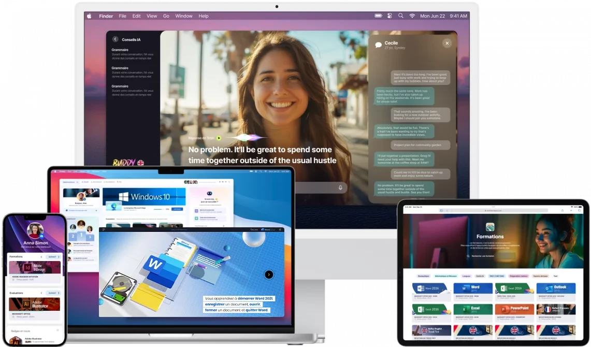
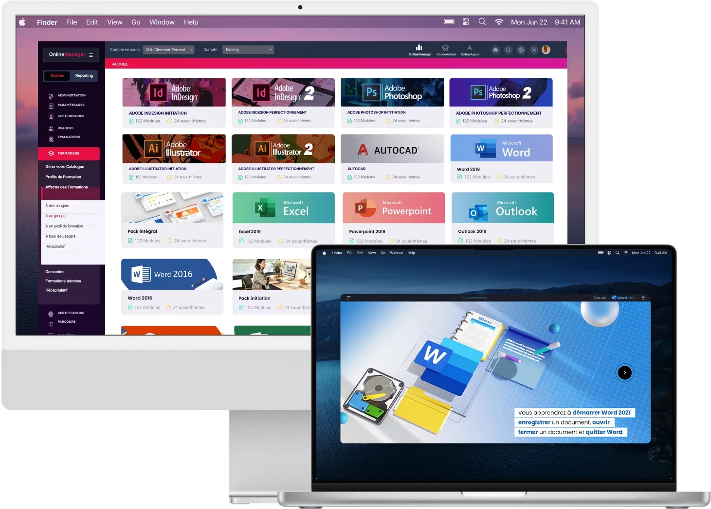
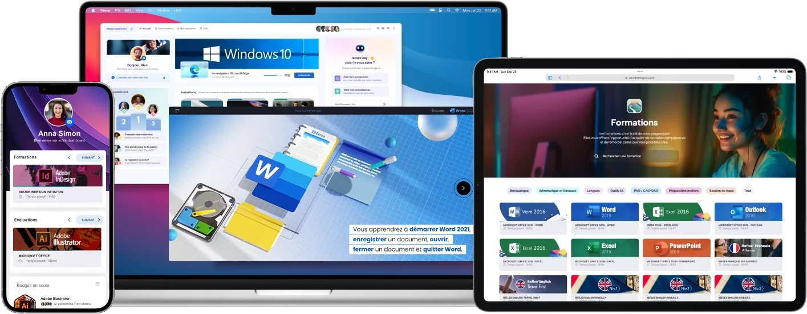

LMS OnlineManager
La plateforme LMS que les apprenants et administrateurs adorent
La plateforme LMS OnlineManager est adoptée par des PME, des organismes de formation, des universités et de grands groupes.

Saint‑Gobain utilise OnlineManager depuis 2013
« La plateforme est utilisée à toutes les échelles et tous les niveaux hiérarchiques à travers le groupe Saint‑Gobain depuis 2013. »
d’apprenants sur OnlineManager
22 Mclients de tous les horizons : entreprises, organismes de formation…
2000+pays, sur 3 continents
13langues intégrées
15Côté administration
Gérer, diffuser et suivre vos formations en ligne
Online Manager vous garantit une gestion autonome de tout votre dispositif e‑learning, blended learning, classes virtuelles avec une prise en main immédiate et intuitive.

L’efficacité, la convivialité et la simplicité
Les interfaces d’OnlineManager ont été conçues pour accueillir tout type d’utilisateur. Que vous soyez expérimenté ou novice, profitez d’un système ergonomique, confortable et intuitif.
Demander une démoConfigurer le LMS à votre image
Gérer vos groupes d’apprenants
Organiser facilement des parcours d’apprentissage
Intégrer vos contenus existants
Évaluer les progrès à travers des reportings complets et visuels
Profiter des fonctionnalités Social Learning
Apprenez à connaître vos apprenants
Du taux de progression aux fréquences de connexion : toutes les habitudes de vos utilisateurs sont ici. Vos analyses peuvent être effectuées sur un individu, ou un groupe d’apprenants.
Demander une démo
Plateforme multiniveaux
Entrez un nombre illimité d’entités et de niveaux : retrouvez‑les en un clin d’œil.
100 % à distance ou blended learning
La plateforme est parfaitement adaptée aux spécificités du métier de formateur et des règles de la pédagogie.
Adaptative learning
OnlineManager permet d’individualiser les parcours de formation en fonction des besoins de chaque apprenant.
Votre interface aux couleurs de votre entreprise
Que vous soyez une entreprise ou un organisme de formation, votre dashboard s’adapte à vos besoins. Vos clients ont besoin d’outils pour se former ? Étendez l’utilisation du LMS en proposant la plateforme à vos clients.
Demander une démo
Côté apprenant
Une plateforme dédiée à l’apprenant
OnlineCompétences est la plateforme d’apprentissage entièrement dédiée à l’apprenant. Elle lui permet d’accéder à ses évaluations, ses formations mais aussi à de nombreux outils collaboratifs.

Lisy, le coach IA proactif et multifacette
Lisy intervient dans votre plateforme LMS de manière dynamique, proactive et variée tout au long du parcours de vos apprenants : rappels, défis et encouragements personnalisés, depuis le tableau de bord et au sein des modules.
Quelques références
La plateforme Online Manager est utilisée par des grands comptes, des organismes de formation, des universités et des PME.
900 000 élèves évalués en 9 semaines
France Education International a évalué 900 000 élèves en 9 semaines avec OnlineManager.
« Nous avions besoin d’une solution robuste et flexible, capable de s’adapter à divers établissements tout en offrant une évaluation précise pour les élèves. […] Tout cela a été rendu possible grâce aux équipes d’Onlineformapro, avec qui nous avons établi une véritable relation partenariale. »
Spécifications techniques
Conforme aux normes AICC, SCORM et xAPI, interfaçable avec votre logiciel de GDRH ou annuaire LDAP, OnlineManager s’adapte à votre environnement.
Vous avez un projet ?
Contactez‑nousSécurisation
Afin de protéger l’intégrité de vos données et celles de vos apprenants, le LMS Onlineformapro respecte l’ensemble des bonnes pratiques de sécurisation : 10 % de notre budget de développement est consacré à la cybersécurité.
ANSSI Visa de sécurité certifié : CERT‑FR, Centre gouvernemental de veille, d’alerte et de réponse aux attaques informatiques.
Hébergement et data center
Déployez instantanément votre programme de formation digital learning global avec notre solution en mode SaaS (ou Cloud) sur serveur mutualisé ou dédié. La qualité de nos systèmes vous assure un hébergement opérationnel 24 h/24.
Données hébergées en France soumises au RGPD. Sauvegarde quotidienne des données, alimentation électrique, climatisation et réseau redondants, surveillance visuelle permanente, système de détection d’incendie.
Normes et interconnexions
Conforme aux normes AICC, SCORM et xAPI, interfaçable avec votre logiciel de GDRH ou annuaire LDAP, OnlineManager s’adapte à votre environnement, avec un respect complet du RGPD.
Responsive design
Administrez ou consultez le contenu du système sur tous vos appareils connectés. Mobile, tablette ou ordinateur de bureau, votre interface s’adapte parfaitement à vos outils.
Langues
15 langues intégrées.
Demandez une démonstration
La révolution de la gestion de la formation, le tout orchestré par le plus brillant des maestros : l’intelligence artificielle.
- Prise en main quasi immédiate
Des didacticiels tout au long de votre prise en main. - Données hébergées en France
Soumises au RGPD, sauvegardées chaque jour.